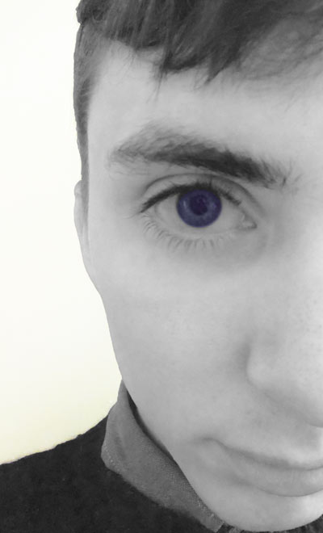

Mike Lee
15th Feb 2014
For the task at hand I had to identify certain areas of my life that would allow me to portray a day my life. All these picture have something to do with part of my life from running for the train to walking to university, what I eat and me as a person and how people identify me. These types of images represent a day in a life with me and give the viewer a look through my eyes. For the task I used Panasonic Lumix DMC-XS1, when It came to editing I used Photoshop to manipulate parts of the image this meant using different effects and tools to get the image the way I wanted. All shot were carefully planned and shot with set up being made for them to get the best photo and one that shown a day in my life.
The images
Portrait (standard)
For my portrait picture which is unedited I took it of myself, In this picture I'm trying to capture a general appearance of me as this is a massive part of my life. I took the image quite close to my face to show all detail. When preparing to take the picture I was influenced by Robert Walker photos where he used a plain background and a blackout curtain on one side of the face of the subject so only one side is seen. In preparation for this picture I'm trying to use the light from my room window as it is the only source of light that I receive throughout my flat. In preparation for this shot I used a bed sheet to use as a backdrop as this provided a reflection on light to help with some of the lighting issues I was having while in preparing for the picture. Instead of having a curtain which I could hang to get the effect which is seen in some of Robert Walkers work I used a black coat which I could hand from a peg in my room to create a slight shadow across my face. When taking the photo I tried different poses into the camera and different camera angle although this was very limited with the set up. As you can see the picture is taken with me slightly to the right to leave some space for the shadow to grow. When choosing from the picture I taken this came into consideration as it gave something more to the photo.
Portrait (artistic)
For the artistic portrait I wanted to take a photo of my life and how people identify me. One thing in particular people Identify is my eyes, therefore I wanted to use this aspect of me and make it more focused on rather than a picture of my whole face. With the set up I had for the original portrait picture I used this to get a close up shot of my face with the main focus being my eyes. I took into account the angle and the pose I wanted. Once taken I edited the photo by making the background of the image white and everything except the eye being in black and white. Once that was completed I cropped the image down so that only half of my face was in the photo. From there I enhance the brightness and depth of blue in my eyes so it stood out more. The end result gives a slight colour pop effect to the image but I didn't want to go over board on enhancing the colour to a unnatural amount.
Landscape
On a daily journey to university I walk under a motorway where these tunnel are found. While walking through I noticed the shot which could be taken and describes a day in my life. When taking the shot I took into account how much light was actually coming through the tunnel. For one the end of the tunnel was heavy with light where the start of the tunnel was dark. I used the camera to manipulate how much light was being taken into account by changing the exposeer it took in. After taking a few shot I noticed the best level to take it from was normal high as this captured the footstep,lights and the en of the tunnel. On top having stood in the centre of the tunnel it allowed the walls to help direct the eye to the end of the tunnel. When it came to editing I took into account what I wanted to capture and depict with the image. For one I wanted the inside of the tunnel look bleak and dark where the end was light and heavenly. I also wanted to capture the footprints that helped lead the viewer to end of the tunnel and create the idea that the end of the tunnel is the where you want to be. I enhanced the effect of this by photoshopping the end of the tunnel by making it more lighter. In turn I darken the walls of the tunnel. Another thing I wanted was the footprints to be seen more I captured the footprints and lightened them to help the visibility of them to become more apparent.
Object
When creating my object photo I was inspired by some of the food photography that I come across everywhere I go from adverts and commercial that show food. The reason I took this photo to represent what happens in the morning of my life, it shows a normal morning in my life when preparing for the day ahead. In preparation for this photo I planned what type of shot I wanted. Firstly I wanted the food to be the main focus of the picture and to draw most of the attention. But have the cup that I use as another everyday object to be in the shot. I took a lot a of shots from different angles with a aerial view looking onto the food and into the cup. But the angle I settled on was a horizontal level shot which captured both objects. Thinking of the lighting I made sure all sources of light was available this included natural light that came through the windows and the lamps so that the lighting of the object was being exposed to it full potential. After taking many photos I decided on this particular image due to the angle how the light reflexes off the plate and other object seen. When It came to editing the picture I was happy with the image as it was but spotted partials on the surface of the table, I used the stamp tool to remove these partials from the image. Nothing else was then added or removed from the image.
Pop Art
The popart images shows a character running for the train at Deansgate station, as this is a particular regular occurrence I wanted to make a Banksy style popart image from it. In preparation for this image I went around train stations looking for the best photo to describe where It was and what I was trying to depict. I found a place where the boards of train where in site and a clear part of the wall, where I could fit a graphic of a runner. Once I found that I had to take a picture of someone running this was particular difficult because all photos came out blurred and last second shots didn't give the right pose. So to get the image I wanted I found a place where I could hold my camera up because a tripod wasn't available and had to time me running past the camera when the shot was taken. Once I had the shot I used the banksy photoshop tutorial to use the effect on the wall.
Return to top | Home